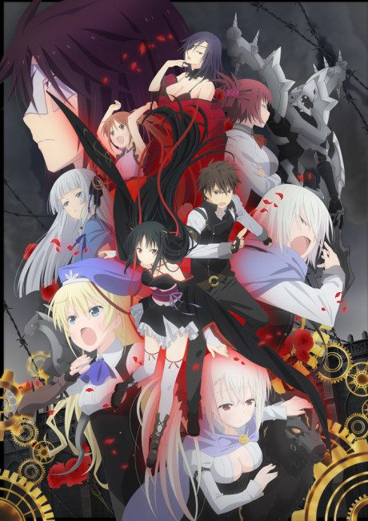
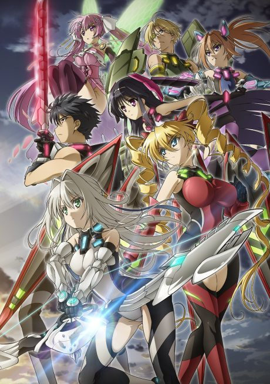
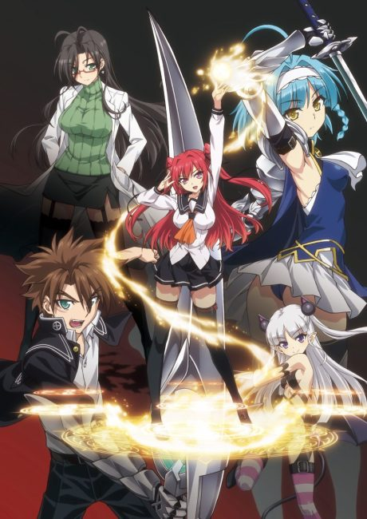

The Greatest Demon Lord Is Reborn as a Typical Nobody
史上最強の大魔王、村人Aに転生する
Varvatos, a bored demon lord, reincarnates himself 3,000 years later as a typical villager.
After the anime, read the light novel from Volume 4.
6.2AniList score
—Animeter, no votes yet
12episodes
Rate it or report where you stopped
Anime finished. Where does the story go next?
Start at Volume4
The anime adapts the first three light novel volumes, so continue at volume 4 (the school field trip). The light novel is preferred over the manga, which stops early.
1310 end
Season 1Start reading here
More like The Greatest Demon Lord Is Reborn as a Typical Nobody
 Manga Vol. 47.2
Manga Vol. 47.2
 Unclear5.8
Unclear5.8
 Manga Ch. 186.7
Manga Ch. 186.7
 Manga Vol. 76.5
Manga Vol. 76.5
 Manga Vol. 56.3
Manga Vol. 56.3
 Unclear6.3
Unclear6.3
 Unclear6.2
Unclear6.2
 Manga Ch. 757.6
Manga Ch. 757.6
Done6.6
Strike the Blood
Manga Vol. 46.6
Unclear5.9
Manga Vol. 86.3